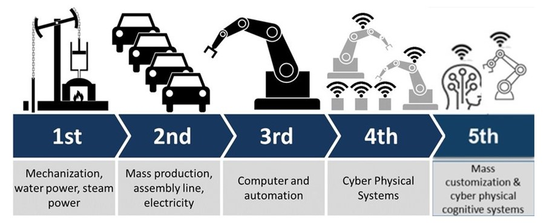

Overview
Manufacturing is a key sector for the UK economy, accounting for 10% of GDP and 44% of exports, the UK is the 8th largest exporter in the world, its important. In this article, we delve into the transformative impact of Artificial Intelligence (AI) on the manufacturing sector, a pivotal segment of the UK economy. Traditionally, manufacturing focused on materials and processes, but the advent of computing and data analytics has ushered in a new era where these technologies are central to the sector’s future. We explore how AI influences manufacturing jobs and the broader workforce, examining the creation of new roles and the evolution of existing ones, and how these changes are empowering the UK manufacturing sector to redefine its future.
The journey from the third to the potential fifth industrial revolution marks a significant transition. Starting from the initial integration of IT systems in the third revolution to the interconnected IoT systems in the fourth, and envisaging a future where AI and robotics seamlessly integrate in the fifth, we trace the trajectory of technological advancements in manufacturing. This evolution is not just about increased efficiency and productivity; it’s also about personalization, sustainability, and a significant shift in workforce dynamics and skills.
The current state of AI in manufacturing, while still developing, shows immense promise. From predictive maintenance to supply chain optimization, AI is beginning to redefine how manufacturing processes are conceived and executed. This article also shares a personal account of how AI has revolutionized work processes from an IT perspective within the manufacturing industry, highlighting the practical implications and benefits of these advancements.
As we analyze the economic aspects of AI in manufacturing, focusing on the increasing demand for GPUs and the implications for AI development, we observe a trend of growing accessibility and democratization of AI technologies. This trend is paving the way for more inclusive and widespread use of AI across various levels of the manufacturing industry.
The evolution of software in manufacturing, from traditional hand-coded systems to machine learning models and now to large pre-trained foundation models, represents a fundamental shift in how manufacturing processes are managed and optimized. We examine the current and future states of manufacturing software, emphasizing the critical role of AI in driving innovation and efficiency.
Finally, we look at the emerging role of the AI engineer in manufacturing, a role that blends technical proficiency with visionary application. The unique challenges and requirements of the manufacturing sector, such as the need for specialized sensors and precise measurements, underscore the importance of customizing AI solutions or developing new models tailored to specific contexts. This article concludes by highlighting the ongoing journey of AI in manufacturing, a journey that is reshaping the workforce and the industry in profound ways.
Evolution of manufacturing : 3rd, 4th, 5th industrial revolutions

You can see from the image above, computers started to appear in:
The 3rd industrial revolution but there were lots of companies that didnt have IT systems and when they did, they were not joined up. The IT systems were maybe stock control, accounting, or an ERP system and PLC’s to automate machines that were previously manual.
The 4th industrial revolution the IT systems are more joined up and the machines and parts and factories make use of IOT (internet of things) systems. All this allows for real-time data exchange and monitoring. This connectivity facilitates more efficient operations, predictive maintenance, and improved decision-making based on comprehensive data analysis. This is where most manufacturing companies are now but some are resistant to change and are still in the 3rd industrial revolution.
The 5th industrial revolution While still largely conceptual and not universally recognized as a distinct phase, the idea of a fifth industrial revolution often revolves around the integration of advanced technologies like AI and robotics into the manufacturing process. This could lead to even greater automation, with AI making complex decisions and managing processes. The focus is not just on efficiency and productivity but also on personalization and sustainability. The impact on economies and workforces would be significant, as it would necessitate a shift in skills and roles.
The Current State of AI in Manufacturing
AI is already being used in manufacturing, but it’s still in its infancy. The majority of AI applications in manufacturing are focused on improving efficiency and productivity. This includes predictive maintenance, supply chain optimization, and process automation. There are a lot of classification models for quality but more growth will be on the generative models. The impact of AI on manufacturing is expected to grow significantly in the coming years, with the global market for AI in manufacturing projected to reach $16.7 billion by 2026.
Personal Experience: AI’s Impact on My Workflow
As a IT worker in manufacturing, my work flow has change due to the advancements in AI. I’m a ahead of the rest of the business in terms of using AI to improve my workflow and results it gives to the business.
I use to speak to the people in business (my customers), understanding their/the businesses requirements, and then building a solution and iterate between the two and maybe use a 3rd party for extra resources to finish the solution in a quicker time.
The approach I use has evolved. While I still communicate with colleagues, I now employ AI and data science techniques to extract and organize information from various structured and unstructured systems. This allows me to present data to the business in a more efficient and effective manner. Prior to recent technological advancements, managing this process alone wouldn’t have been cost-effective. Currently, I leverage these tools to distil information, which aids in making decisions or uncovering additional insights and requirements.
When a solution is required, I’m now using AI to help me build the solution in record time and with better quality, giving the business a better return on their investment in me, effectivly increasing my worth. The AI models I’m using are general purpose models that have been trained on lots of data but im using them to build unique products and solutions that are a fit for our business. Building solutions using AI and building on existing foundation AI models is the future of manufacturing.
Other people in the business will improve their work flow by using generalized AI models and systems to help them make decisions and automate processes their own processes. They will also get the benefit of the work I’m doing (IT department), as I am be able to build solutions to improve their processes.
This will free up their time to do more value added work. This will increase their worth to the business. This will increase the UK economy. This will increase the UK productivity.
The Economics of AI in Manufacturing
Graphics cards (tensor proceses) are the hardware that compute AI models. The sale of these cards gives a great insight into the future demand of AI, it’s one of the limiting factors in more models and end users using those models. GPU demand is outstripping supply and is likley to do for a long time. Companies are racing to train the latest models, updating existing models and providing compute for inference (querying models for results). All of this requires more GPU’s. Here’s some stats from [GPU economics] (https://www.latent.space/p/semianalysis) on the growth of GPU’s:
- NVIDIA is forecasted to sell over 3 million GPUs next year, about 3x their 2023 sales of about 1 million H100s.
- AMD is forecasting $2B of sales for their new MI300X datacenter GPU. They are also indirectly getting a boost from the work that companies like Modular and tiny are doing in making it easier to actually use these chips (will ROCm ever catch up?).
- Google’s TPUv5 supply is going to increase rapidly going into 2024.
- Microsoft just announced Maia 100, a new AI accelerator built “with feedback” from OpenAI. and much more.
Having more compute will increase competition and drive down prices. This will allow more companies to use AI and more people to use AI. This will increase the demand for AI and the demand for AI workers.
Software Evolution: From 1.0 to 3.0 in Manufacturing
Software is changing, the pace of change is accelerating due to AI. The future of software is going to be very different to the past. Software is at the heart of manufacturing, it’s used to control the machines, it’s used to control the processes, it’s used to control the supply chain, it’s used to understand the business and help control the business. Manufactures leadership and employees need to be aware of these changes and secondly, they are going to need to adapt to this change. They need to realise that this change is key to the 4th and 5th industrial revolutions mentioned above and their future success. The manufactures that adapt the quickest will be the ones that profit and grow. The manufactures that don’t adapt will be left behind. Now a little about the software evolution.
- Software 1.0: Hand-coded software with conditional logic, loops, etc.
The deterministic nature of Software 1.0 made it highly reliable and predictable, which was crucial for manufacturing processes where precision and consistency were non-negotiable. However, this method had its limitations. It was labor-intensive and less adaptable, requiring substantial human effort for updates and modifications.
- Software 2.0: Machine learning models like neural nets trained on data
Software 2.0 signifies a paradigm shift towards machine learning models, particularly neural networks. Instead of manually programming every possible outcome, this era focused on training models on large datasets. These models could then learn patterns, make decisions, and adapt to new data, making them more flexible than their predecessors.
- Software 3.0: Using large pre-trained foundation models without needing to collect/label training data
Software 3.0 is where the future begins to unfold, characterized by the use of large, pre-trained foundation models. These AI models, having been trained on extensive, diverse datasets, can be fine-tuned for specific tasks, drastically reducing the need for new data collection and labeling.
There will be a transition between software 2 and 3. We’re in a weird space where alot of people/companies are still in software 1.0 and trying out features from software 2.0 but also using 3.0 on occasional. i think all 3 will exist for a long time but will be seeing more growth in software 2.0 and especially 3.0.
The Future of Manufacturing Software
In the manufacturing sector, Software 3.0 opens up new horizons. It allows for greater customization, efficiency in processes, and enhanced predictive capabilities for maintenance and supply chain management. The integration of AI with IoT and robotics leads to smarter, more connected factories.
Democratization of Advanced Machine Learning Technologies in Manufacturing
The democratization of AI is a key driver of this evolution. The availability of foundation models and the ease of use of AI platforms are lowering the barrier to entry. This is enabling more people to leverage AI in their work, including those without extensive data science expertise. The result is a shift in the role of software engineers, from building models to consuming them. This is the rise of the AI engineer.
What will new AI roles look like
Over view
It used to be that you needed expert maths skills, data science and coding skills to be able to build and train models and then a lot of experience in all of the roles. You would need to know how to prepare data, how to train models, how to evaluate models, how to deploy models, how to monitor models, how to retrain models, how to update models, how to use models. You would need in depth knowledge of them all or more likely, be in a team where have, a data preparation expert, an expert in models for the different types of data, and architecture to be able to communicate between these roles and many more roles. A lot of the tooling improvements have enabled this to be done by one person or a very small team depending on how big the project is.
The most talked about model is ChatGPT. It’s a chatbot interface where you ask questions (prompt) and it will give you an answer. There are other less known models where you just ask what you want in text and it return in other forms such as images, text, video, audio, 3d models. Anyone who can use a computer can use these models. All it takes is understanding what models are available, what they do for you and how to get the best outputs for your inputs. This will be a key skill to have.
For more advance users/developers there are more specific solutions for producing code within a development environment like Microsoft copilot offers. There are over 15,000 off the shelf models from hugging face ranging from nlp, multimodal, computer vision, speech processing and many more. All these models have their weights release which means that they can be use as is or customize (fine-tuned) to your own organizational needs, no need to start from scratch. On hugging face, there are datasets ready to be used to train Neural network and spaces to allow you to use the models. This is where things start to get interesting.
Enter the AI engieer,
In the rapidly evolving landscapes of Industry 4.0 and 5.0, the role of the AI engineer emerges as a pivotal element. This role is defined by a deep understanding of the problem domain, comprehensive knowledge of AI models and ecosystems, and the ability to apply this expertise to deliver tangible business outcomes. These outcomes can range from gaining new insights and automating tasks, to enhancing the quality of products. The AI engineer leverages the principles of what can be described as “software 3.0” along with software 1.0 and 2.0. Some specific applications of AI in manufacturing include:
- Predictive Maintenance: A car manufacturing company uses AI algorithms to analyze data from assembly line robots. The AI predicts when a robot’s components are likely to fail, allowing for maintenance before a breakdown occurs, thereby reducing production downtime.
- Supply Chain Optimization: A consumer electronics manufacturer employs AI to forecast demand for its products, adjusting production schedules and inventory levels accordingly. This AI-driven approach helps the company avoid overproduction and stock shortages.
- Personalized Manufacturing: A furniture company uses AI to offer customers the ability to customize products online. The AI assists in translating these customizations into manufacturing instructions, enabling mass customization at scale.
- Energy Efficiency: A steel plant uses AI to optimize its furnaces’ energy consumption. The AI system constantly analyzes production data and adjusts furnace operations to maximize energy efficiency while maintaining quality.
- Quality Control: A pharmaceutical company implements AI for real-time quality control. The AI system continuously analyzes images of drug capsules to identify and sort out defects, ensuring high-quality products.
- Worker Safety and Ergonomics: An AI system in a chemical plant monitors the workplace environment using sensors and cameras. It identifies potential safety hazards and suggests ergonomic improvements to reduce the risk of worker injuries.
- Process Optimization: In a textile factory, AI algorithms analyze the entire production process, identifying bottlenecks and suggesting improvements to enhance throughput and reduce waste.
- Market Analysis and Consumer Insights: An AI system helps a toy manufacturer analyze social media trends and consumer feedback to predict which toy designs are likely to be popular, guiding product development and marketing strategies.
- Collaborative Robotics (Cobots): In a packaging facility, cobots equipped with AI work alongside human employees, taking over repetitive tasks and reducing the physical strain on workers.
- Customized AI Solutions: A bespoke AI solution is developed for a food processing company to monitor and optimize the ripening process of fruits, enhancing product quality.
- Training and Simulation: AI-driven virtual reality simulations are used in an aerospace company to train assembly workers, reducing the learning curve and improving precision in complex tasks on high value products. This helps to reduce the cost of training and the cost of mistakes.
- Environmental Monitoring and Compliance: An AI system in a cement factory monitors emissions in real-time, ensuring compliance with environmental regulations and identifying areas for improvement.
- Enhancing Customer Experiences: An AI chatbot in a manufacturing company’s customer service department provides quick and accurate responses to customer inquiries, improving satisfaction.
- Integrating IoT with AI: In a smart factory, AI algorithms analyze data from IoT sensors
Foundation models like GPT-3/4, Claude, and Whisper, signify a shift in the AI paradigm. These models are accessible off-the-shelf via APIs, offering a streamlined path to implementation. Understanding the architecture of these models - their layers and structure - is crucial. The ability to employ a pre-trained model bypasses the need for extensive data collection and training, accelerating the deployment process.
Putting these foundation models into production varies in complexity. It can be as simple as calling an API where no knowledge of infrastrucure is required. Or as intricate as running the models locally, serving high-volume predictions. Running locally and managing demands requires a keen understanding of GPU utilization, batching, and infrastructure expertise.
The emergence of AI engineers is reshaping the landscape of development. AI is becoming increasingly accessible to traditional software engineers, blurring the lines between machine learning engineers and AI engineers. The latter focuses more on consuming foundation model APIs and the former more on building models from scratch.
This shift has economic implications. The demand for AI far exceeds the supply of machine learning experts. Consequently, AI engineers are evolving from software engineers who acquire these specialized skills.
The AI engineering stack is defined by systems of reasoning and retrieval-augmented generation stacks. These connect models to diverse data sources, broadening the scope of application.
AI UX is expanding beyond chatbots, introducing new modalities and interfaces. Building products with these foundation models requires a focus on delivering unique value, solving customer problems, and building trust.
However, there’s a balance to be struck. While some scepticism towards AI is healthy, there’s also a tendency to unfairly blame AI for shortcomings. The hype generated by media and industry creators sets high expectations. It’s essential for AI engineers to remain grounded in real customer needs.
The impact of AI applications is already being felt in various sectors, demonstrating the positive influence of these technologies. For AI engineers, this era represents an unprecedented opportunity to innovate, explore, and shape the future of industries 4.0 and 5.0. Their role is not just about technical proficiency, but also about envisioning and realizing the potential of AI to transform industries and improve lives.
what makes manufacturing different to other sectors
Understanding the factory floor and products might not be possible with selecting off the shelf models. There are certain AI modalities that are particularly prominent or uniquely adapted to the industry’s needs. The general purpose models might require fine tuning or if thats not possible, models will be created from scratch.Some examples of unique AI modalities in manufacturing include:
- Laser Surface Velocimeters: These are used for non-contact speed and length measurement of objects moving on a production line. They are particularly valuable in industries where contact measurement could damage the product, such as in paper or textile manufacturing.
- Machine Vision Systems with Custom Sensors: While machine vision is used in various industries, manufacturing often requires highly specialized vision systems. These can include sensors for inspecting microelectronics at a microscopic level or for detecting minute defects in automotive parts, where standard vision systems would be inadequate.
- High-Precision Displacement Sensors (e.g., LVDTs - Linear Variable Differential Transformers): These are used for ultra-precise measurements in environments like CNC machining centers and for calibrating industrial robots. The precision required in these contexts is often significantly higher than in other sectors.
- Specialized Chemical Sensors for Process Monitoring: For example, in the pharmaceutical or food manufacturing industries, highly sensitive sensors might be used to detect specific compounds or contamination levels that wouldn’t be relevant in other sectors.
- Acoustic Emission Sensors: These are used for condition monitoring and to detect early signs of machinery fatigue or failure, particularly in heavy-duty machinery. They can pick up ultrasonic frequencies generated by cracks or other structural failures not detectable by other means.
- Inductive and Capacitive Sensors in Harsh Environments: In sectors like metal fabrication or mining, sensors need to withstand extreme temperatures, dust, and vibration. The design and deployment of these sensors are often unique to the harsh conditions of manufacturing.
- Magnetic Field Sensors in Electric Motor Manufacturing: These sensors are used for precise measurement and control in the production of electric motors, where understanding the magnetic field distribution is crucial.
- Fiber Bragg Grating (FBG) Sensors in Composite Material Manufacturing: FBGs are used to monitor strain and temperature during the manufacturing of advanced composite materials, which is critical for ensuring the integrity and performance of the final product.
If your working in manfacturing you can use and leverage models using existing models, but theres might be senarios that make sense to either fine tune (transfer learning) or create your a new model from scratch and knowing when to do so is a skill in itself.
conclusion
The evolution of AI in manufacturing is reshaping not only the industry but also the workforce and job roles within it. As we transition through the stages of the industrial revolutions, from the third to the potential fifth, the integration of advanced technologies such as AI, IoT, and robotics becomes increasingly central to manufacturing processes. The current state of AI in manufacturing, although still in its infancy, is rapidly advancing towards more sophisticated applications including predictive maintenance, supply chain optimization, and process automation. These advancements are not only enhancing efficiency and productivity but also transforming the nature of work and the skills required in the manufacturing sector.
The personal experiences shared in this article highlight the significant shift in workflows due to AI advancements. As AI continues to evolve, it is crucial for manufacturing professionals to adapt and acquire new skills, particularly in understanding and leveraging AI technologies. The democratization of AI, through the availability of foundation models and user-friendly AI platforms, is lowering barriers to entry and enabling a wider range of professionals to engage with AI tools.
Furthermore, the emergence of AI engineers marks a pivotal shift in the industry. These professionals, equipped with a deep understanding of AI models and their applications, are crucial in driving innovation and efficiency in manufacturing processes. The role of AI engineers is not just technical; it also involves a visionary approach to harnessing AI for practical, impactful solutions.
The manufacturing sector’s unique challenges and requirements, such as the need for specialized sensors and precise measurements, indicate that while general-purpose AI models offer a strong foundation, there is often a need for customization or development of new models tailored to specific manufacturing contexts.
As we look to the future, it’s evident that AI’s role in manufacturing will continue to grow, leading to more innovative applications, the creation of new job roles, and a significant transformation of the manufacturing landscape. This evolution presents both challenges and opportunities – a chance to enhance productivity and efficiency, but also a need for continuous learning and adaptation to harness the full potential of AI in manufacturing. The journey of AI in manufacturing is one of ongoing progress and adaptation, shaping the jobs and the workforce of tomorrow in profound ways.